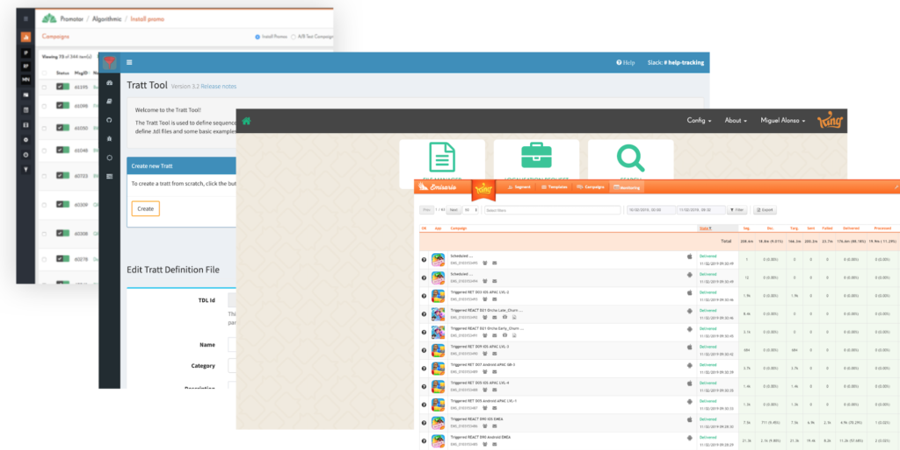

Context
King manages a player network of 600 million users across titles including Candy Crush. The Unified Platform is a single entry point to operate King games efficiently and securely across that network — spanning marketing, real-time data analytics, developer tools and player information.
Framing the problem
As King grew rapidly, its internal tooling to operate games became less and less scalable:
- Tooling fragmentation — the internal toolbox was isolated and poorly documented.
- Lack of coordination between teams — tools worked well within a team but rarely outside it, each too tied to its own silo.
- Inefficiency and duplication — many different technologies made sharing difficult.
- Inconsistency — users faced poor experiences across the tools they had to operate.
My role
- Led UX strategy and problem definition alongside the strategy leadership team.
- Helped the back-end and front-end developer councils set the platform's main foundations.
- Led the design process for the platform's user interface.
- Created and promoted the design system within the organization to keep teams aligned and consistent.
- Aligned with other designers company-wide to establish UX standards for applications integrating into the platform.
The process
1. Problem definition and research
- Ideation sessions and workshops with developers, product people, stakeholders and designers.
- An audit of the current toolset to detect problems and duplication.
- Interviews with stakeholders, PMs, marketing specialists and data scientists to understand how everyone currently worked.
- Personas — since almost everyone in the company was a potential user of the platform.
- User journeys to understand flows and pain points.
- Benchmarking against other companies solving similar problems.
2. Challenges and learnings
- Shifting the mindset and working habits of game-operations teams across the organization — especially engineers.
- Creating a consistent user experience backed by good documentation for different teams.
- Avoiding getting blocked by technical decisions.
- Planning the transition from legacy tools onto the platform.
3. Design solutions
My main responsibilities were helping define the product from the UX side, designing the platform UI, and creating the design system that kept developers and designers aligned when integrating new apps.

Platform UI
Designing the UI was a major challenge — early on there was no clarity on how the platform would grow, how many applications would integrate, or how it would scale across the organization, which made design decisions genuinely hard.
As the Unified Platform team, we were also responsible for the framework in which teams across King would build and integrate their own applications — raising deep questions of information architecture, navigation, technical constraints and user context.
I researched how other companies were solving similar problems, then set the first assumptions and began experimenting with low-fi mock-ups, testing fast prototypes using sketching and tools like Sketch and InVision. That process led to more accurate, validated hi-fi prototypes and further testing — and eventually, after discussion and presentations with leadership and the brand team, the first navigation proposal. In parallel, I built the main style guide defining design principles and documenting components for any team building on the platform.
Achievements
- King now has an internal platform to operate its games and other published titles worldwide.
- Fully adopted by King studios — developers and designers now build toward this platform.
- The platform is entering a more mature stage, ready to scale further.
- Live apps span game operations, dashboards, A/B testing tools and segmentation, with more on the way.
- Responsive and consistent, built entirely on shared design patterns.